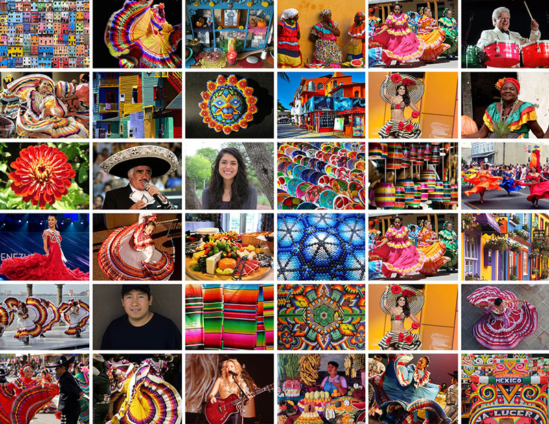

South America

South America is a continent known for its diverse cultures, rich history, and vibrant traditions. It is home to numerous indigenous communities as well as a blend of European, African, and Asian influences brought by colonialism and immigration.
South American culture is characterized by its cultural diversity, with each country having its own unique customs, languages, music, and cuisine. The continent is known for its warmth, hospitality, and strong sense of community.
Indigenous Heritage:
Indigenous cultures in South America have a profound influence on the region's identity. These diverse communities have preserved their traditional languages, art, spiritual practices, and agricultural knowledge, contributing to the cultural richness of the continent.
Colonial and European Influences:
The legacy of European colonization is evident in South American culture. Spanish and Portuguese languages dominate the continent, and colonial architecture can be seen in many cities. European customs and traditions, such as Catholicism, have also left a lasting impact on the cultural practices of the region.
Music and Dance:
South America is renowned for its vibrant music and dance forms. From the energetic rhythms of salsa and samba to the haunting melodies of Andean panpipes and the passionate tango, music and dance play a central role in South American cultural expressions.
Cuisine:
South American cuisine reflects the continent's rich culinary heritage. Each country has its own unique dishes and flavors. From the savory steaks of Argentina to the ceviche of Peru, the feijoada of Brazil to the arepas of Venezuela, South American cuisine offers a diverse range of delicious and distinct culinary experiences.
Art and Handicrafts:
South American art is characterized by its vibrant colors, intricate designs, and diverse materials. Indigenous communities have a long history of producing exquisite textiles, pottery, weavings, and sculptures that showcase their artistic skills and cultural traditions.
Festivals and Celebrations:
South America is known for its lively and colorful festivals, which often blend indigenous, European, and African traditions. Events such as Carnival in Brazil, Inti Raymi in Peru, Dia de los Muertos in Mexico, and Semana Santa in various countries showcase the region's vibrant cultural celebrations.
Nature and Environment:
The stunning landscapes of South America, including the Amazon rainforest, the Andes Mountains, the Patagonian plains, and the Galapagos Islands, have a significant influence on the cultural identity of the continent. The relationship between indigenous communities and nature is often deeply intertwined, with a strong emphasis on sustainability and environmental stewardship.